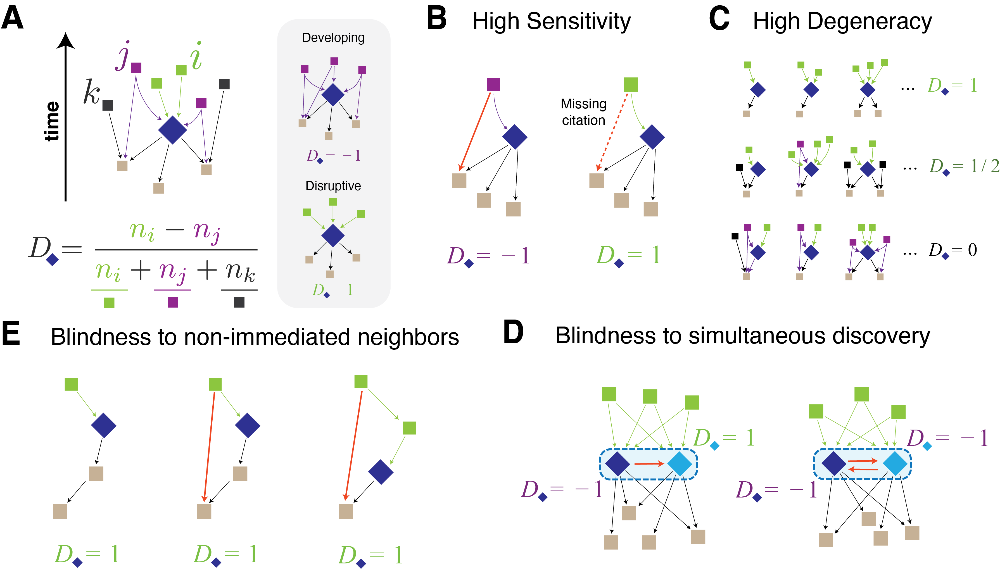
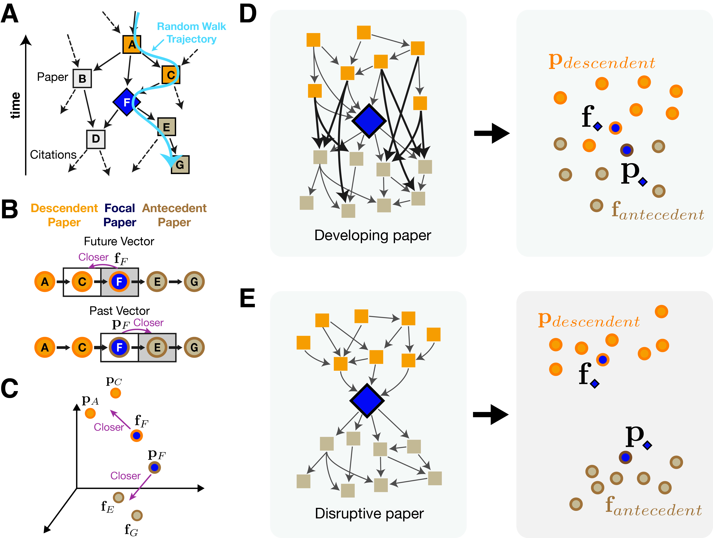
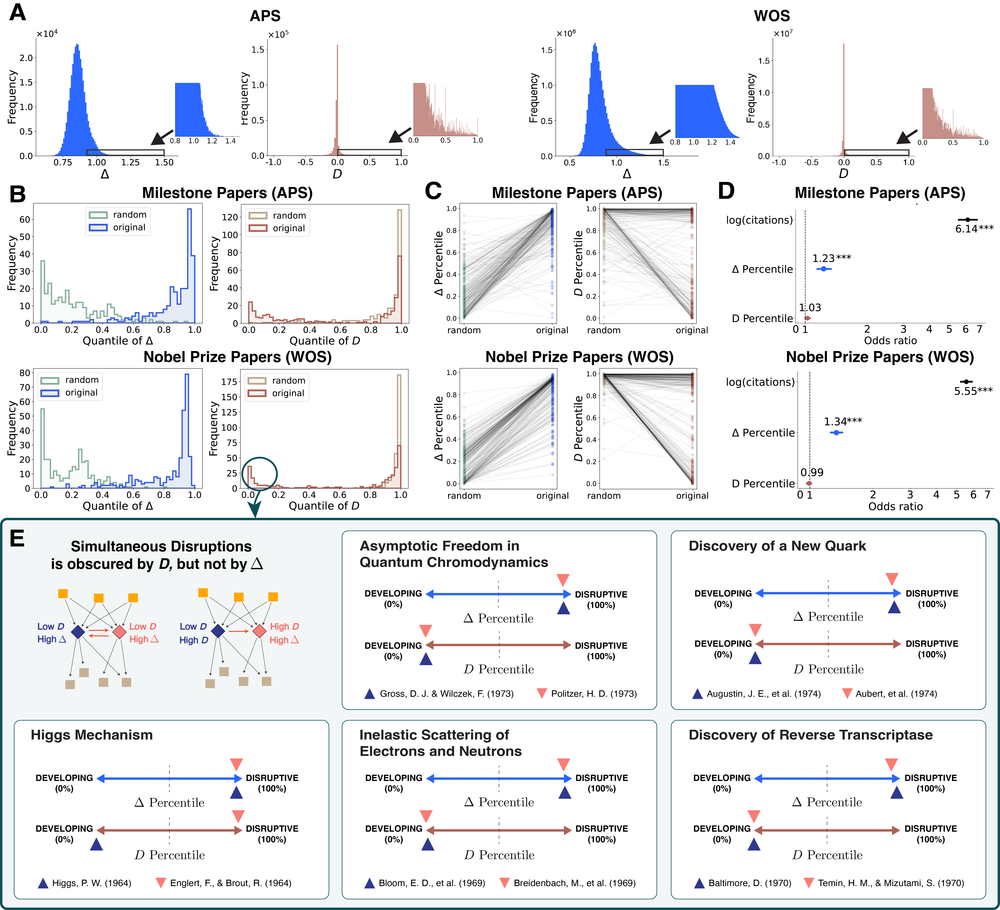

Progress in science and technology is punctuated by disruptive innovation and breakthroughs. To understand disruptive innovations and their drivers, the ability to operationalize and estimate "disruptiveness" is critical. Yet, this task remains difficult because scientific influence propagates through both direct and indirect citation paths, and discoveries are often fragmented across multiple papers. Here, we introduce an embedding-based metric of disruptiveness. When applied to large-scale publication data, the measure not only reliably identifies canonical breakthroughs, such as Nobel Prize-winning papers, but also discovers simultaneous disruptions that eluded standard approaches. By enabling more robust identification of disruptive innovations and simultaneous discoveries, our method facilitates more accurate attribution of transformative contributions while providing insights into the mechanisms driving scientific breakthroughs.
• • •
Why measuring disruption matters
Science is not a static body of knowledge but a dynamic system, continuously reshaped as new discoveries challenge established paradigms. Some contributions maintain an existing trajectory — consolidating work. Others redirect it toward unforeseen lines of inquiry — disruptive work.
Capturing this distinction empirically is challenging. Citation links are sparse and semantically noisy, influence propagates through multi-step pathways, and a single contribution may be distributed across multiple publications or discovered independently by separate teams.
The Disruption Index (D), introduced by Funk & Owen-Smith and popularized by Wu, Wang & Evans, has become the most widely adopted measure of scientific disruptiveness, used across thousands of studies in scientometrics, management science, and science policy.
We build on this foundation. Our embedding-based approach is designed to complement existing measures by additionally capturing indirect citation paths and a phenomenon that local measures are not designed to address: simultaneous discoveries.
Motivating example: the J/ψ meson
In November 1974, two independent teams made the same breakthrough. At Brookhaven National Lab, Samuel Ting's group found a new subatomic particle. Three thousand miles away at SLAC, Burton Richter's team found the exact same particle. They named it the J/ψ meson. Both teams shared the 1976 Nobel Prize.
Merton's theory of multiple discoveries suggests that such simultaneous, independent scientific advances are the norm rather than the exception — as exemplified by Newton and Leibniz's formulations of calculus, or Darwin and Wallace's parallel development of evolutionary theory.
When two teams independently make the same breakthrough, they naturally cite each other. This mutual citation pattern causes local measures like the disruption index to score both papers as consolidating (D = -0.11 and D = -0.64 for the J/ψ papers), even though they represent a paradigm shift. This is not a flaw of the disruption index per se — it's a consequence of measuring disruption from local topology alone.

Motivating our approach.
(A) The disruption index captures local citation topology around a focal paper.
(B–C) Different network structures can yield similar local statistics, motivating a global perspective.
(D) Simultaneous discoveries — where independent co-discoverers cite each other — present a unique challenge for local measures.
(E) Indirect citation paths carry information that local counts do not capture.
These observations motivate an approach that goes beyond local citation counts — one that leverages the full network structure, including indirect paths and higher-order relationships, to provide a complementary perspective on scientific disruptiveness.
• • •
An embedding-based approach
We introduce an embedding-based measure that captures the extent to which a scientific work redirects the research trajectory. Our approach embeds each paper in a high-dimensional space reflecting its direct and indirect connections to prior and subsequent work. Instead of counting immediate neighbors, we learn vector representations from the full citation network. The key insight: every paper plays two roles.
1
Walk the network. Random walks traverse the citation graph, capturing both local and long-range structure — something the disruption index fundamentally cannot do.
2
Learn two vectors per paper. A future vector captures how a paper influences its descendants. A past vector captures how it relates to its antecedents.
3
Measure the gap. The cosine distance between a paper's future and past vectors is its Embedding Disruptiveness Measure (EDM). Big gap = disruptive. Small gap = consolidating.

How EDM works.
(A) Random walks traverse the citation network.
(B) A directional skip-gram learns future and past vectors from walk sequences.
(C) In embedding space, disruptive papers have distant future and past vectors.
(D) A developing paper: future and past stay close — descendants follow the same references.
(E) A disruptive paper: future and past diverge — descendants break new ground.
The key trick: a directional skip-gram
Standard skip-gram models (like Word2Vec or node2vec) learn a single vector per node. But citation networks are directed — being cited is fundamentally different from citing. We need each paper to have two separate representations.
Our skip-gram objective is designed so that:
The directional constraint
When a random walk moves forward in time (from a paper to its descendants), the model trains the paper's future vector (f) to predict the past vectors (p) of the papers it reaches.
When a walk moves backward (from a paper to its antecedents), the model trains the paper's past vector (p) to predict the future vectors (f) of the papers it reaches.
Concretely, for a random walk starting from paper s, the objective is:
J = Σs Σr Σt Σw log Pr(vt+w | vt)
where vt is the paper at position t in the r-th walk from s, and the prediction window w determines whether we look forward (future) or backward (past) in the walk.
This is what makes the two vectors learn different things: the future vector learns to predict where knowledge goes, and the past vector learns to predict where knowledge came from. The same paper, two perspectives.
Mathematical connection to the disruption index
We show formally that when the number of walks R and walk length T are large enough, the skip-gram objective simplifies to:
J ≈ Σu Σv ∈ A(u) κvin log Pr(v | u)
where A(u) is the set of antecedent papers cited by u, and κvin is the in-degree (citation count) of paper v. This means the model is implicitly learning from the same citation structure that the disruption index uses — but through the lens of the entire network, not just immediate neighbors.
The cosine distance between future and past vectors then captures whether a paper's descendants rely on the same antecedents (consolidating) or diverge from them (disruptive) — the foundational concept behind the disruption index, but implemented with far greater robustness and resolution.
The EDM formula is simply:
EDM = 1 - cos(future_vector, past_vector)
• • •
Does it actually work?
We tested EDM on 54.9 million papers from Web of Science, 644K papers from APS, and 7.4 million patents. We validated against Nobel Prize papers, APS milestone papers, and government-funded patents.

EDM outperforms the disruption index across the board.
(A) EDM produces a smooth distribution; D clusters at discrete values.
(B) Milestone and Nobel Prize papers rank higher under EDM.
(C) Individual paper rankings are more stable across randomized networks.
(D) Firth's logistic regression: EDM is statistically significant; D is not.
(E) Five landmark simultaneous discoveries — both co-discoverers score high on EDM, while D penalizes them.
Disruption Index
EDM
Distribution
Discrete, clusters at 0, 0.5, 1
Smooth, continuous
Scope
Local (immediate neighbors)
Global (full network structure)
Simultaneous discoveries
Not designed to capture
Captured via shared future vectors
APS Milestone papers
OR not significant
OR = 1.23, p < 0.001
Nobel Prize papers
OR not significant
OR = 1.34, p < 0.001
Revisiting the J/ψ meson
Because EDM captures global network structure rather than local citation counts alone, it provides a complementary view of the J/ψ co-discovery:
J/ψ Meson Discovery (1974)
Disruption Index: D = -0.11 and D = -0.64 EDM: Δ = 0.99 and Δ = 0.97
The local measure reflects mutual citations between co-discoverers. The embedding-based measure captures the broader impact: both papers fundamentally redirected the field.
Using future vector proximity, we identified 18,417 potential simultaneous discovery pairs across the entire Web of Science. Of 80 highly-cited pairs we examined, 64 (80%) were confirmed as genuine simultaneous discoveries.
Simultaneous discoverers cluster in embedding space.
PCA of future vectors shows that co-discovery pairs are nearest neighbors — they share the same impact on the field, despite being independent works.
• • •
Use it yourself: embedding-disruptiveness
Everything in this paper is packaged as an open-source Python library. Install it and compute EDM on your own citation network in minutes.
Install
pip install embedding-disruptiveness
Step 1: Compute the Disruption Index
import embedding_disruptiveness as edm
import scipy.sparse
net = scipy.sparse.load_npz("citation_network.npz")
# Automatically picks the best method for your network size
di = edm.calc_disruption_index(net)
# For very large networks (100M+ nodes), force the memory-efficient method
di = edm.calc_disruption_index(net, method="iterative")
# 2-step disruption index
di_2step = edm.calc_multistep_disruption_index(net)
Step 2: Train Embeddings & Compute EDM
trainer = edm.EmbeddingTrainer(
net_input="citation_network.npz",
dim=100, # embedding dimension
window_size=5, # context window
device_in="0", # GPU for past vectors
device_out="1", # GPU for future vectors
q_value=1, # node2vec parameter
epochs=1,
batch_size=1024,
save_dir="./output",
)
trainer.train() # train the skip-gram model
trainer.save_embeddings() # save in.npy, out.npy
trainer.cal_embedding_disruptiveness() # compute & save distance.npy
Step 3: Convert Edge Lists (Optional)
import numpy as np
from embedding_disruptiveness.utils import to_adjacency_matrix
# From edge list
edges = np.array([[0, 1], [1, 2], [2, 3]])
net = to_adjacency_matrix(edges, edgelist=True)
# From weighted edge list
weighted = np.array([[0, 1, 0.5], [1, 2, 1.0]])
net = to_adjacency_matrix(weighted, edgelist=True)
Output Files
After training, your save_dir will contain:
output/
in.npy # past vectors (n_nodes x dim)
out.npy # future vectors (n_nodes x dim)
distance.npy # EDM scores (n_nodes,)
Each paper gets an EDM score between 0 (consolidating) and ~1 (disruptive). You can rank, filter, and analyze these scores however you like.